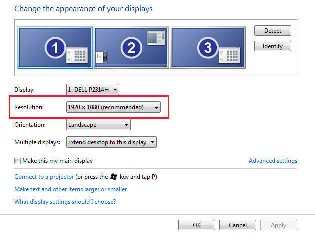

Display Settings
This page will contain general information on how to adjust screen resolution and monitor setup. With monitors increasing in size, one of the major drawbacks are the shrinking icons and text.
This can be remedied after following a few simple steps.
- Adjusting the resolution is fairly simple. Right-click on your desktop and select Screen Resolution.

- From this window, you may adjust the screen resolution to your preference. After clicking Apply, you will be asked if you want to keep the settings or revert back.
It might take a few attempts until finding that perfect setting!
- When you finalized your settings, remember to click Apply to save them.
NOTE: If you have multiple displays (such as the example above), you can adjust the resolution on each monitor as needed. Select which Display from the dropdown
menu. If you are unsure which monitor to choose, use the Identify button.
- Adjusting the font size can help make text appear larger. Follow the steps below to choose your best option
- Click the start button, type Display and press 'Enter' on your keyboard.
- From Dispaly Properties, you can change your font size to Smaller - 100%, Medium - 125% and Larger - 150%
- Click Apply to save your settings
NOTE: Changing your fonts from 100% (Default) may cause undesired results in some business applications. Please change these with caution. Remember, you can always change
it back should you need to.
General Resolution Troubleshooting
- Black bars appear down side of monitor
- The monitor does not like the resolution chosen and compensates for it adding black margins on each side. You can change this by Right-clicking on your desktop
- Select Graphics Options > Panel Fit > Built-in Display > Scale Full Screen
- Contact Technical Support for further assistance if required
- Screen Resolutions do not match
- This is working as intended. Screen Resolutions on most laptops can't be as large as 23" monitors.
- Adjust each monitor to the best resolution possible.
- Contact Technical Support for further assistance if required
Mutltiple Displays
Configuring multiple displays can sometimes be difficult. Please follow a few basic steps to help you along the way.
- Right-click on your desktop and select Screen Resolution.
- From this screen, ensure the monitors match your physical setup. Use the Identify button if needed. In the example below, 1 is the laptop display and 2 is the external monitor.
The laptop is phsycally set up to the right of the external monitor. Therefore, we need to adjust that by dragging it to the right.
- The final change within Screen Resolution is ensuring your Start Menu is on the correct screen. You can make any screen your main display by selecting the checkbox beside Make this
my main display.
- After this setup has been completed, you need to decide if you would like to Clone your displays or Extend your displays.
- Clone: Cloning your displays will effectively make them identical. You will see a Start Menu on both screens and anything open on one will be open on the other
- Extend: Extending your displays will allow you to multitask easier. It give you the ability to drag and drop windows to another monitor. For example, you can have
MS Outlook on one monitor while still working in PolicyCenter on the other.
- To accomplish this, Right-click on your desktop and select Graphic Options > Output To > Extended Desktop (or Clone Displays) and choose the configuration you want.